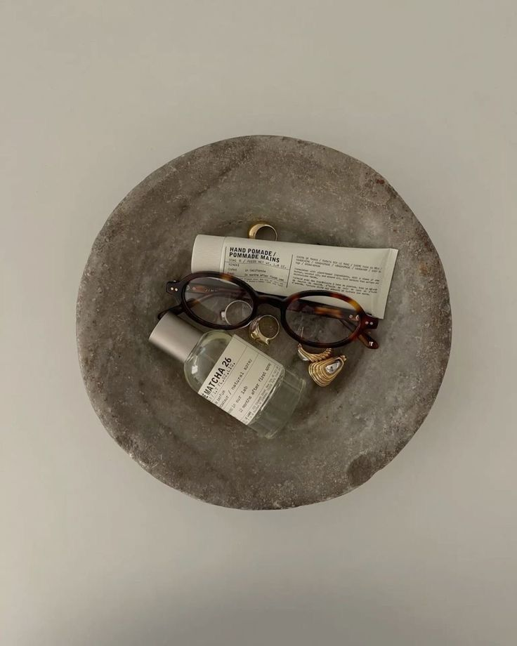
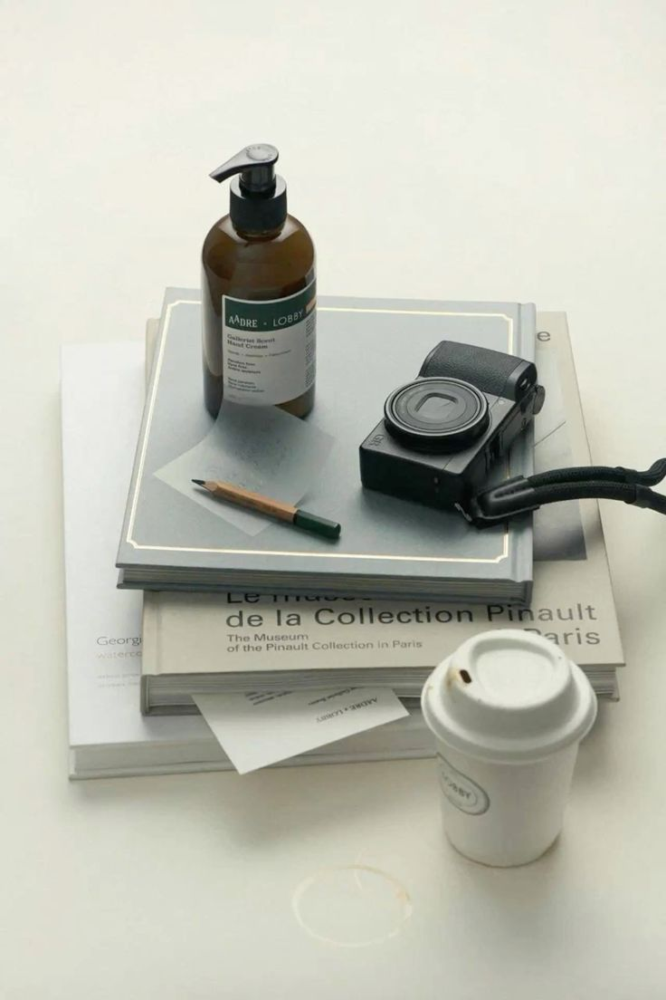

静かな選択
Curated Silence
A simple website for a curated select shop.

A quiet website for a small select shop.
Focused on space, balance, and mood.
小さなセレクトショップのための、静かなウェブサイト。
余白とバランス、空気感を大切にしました。
작은 편집샵을 위한 조용한 웹사이트입니다.

Problem
Most shop websites feel busy.
Too many things at once.
Hard to stay for long.
多くのショップサイトは少し騒がしい。
要素が多くて、長く見ていられない。
대부분의 쇼핑몰은 복잡하게 느껴집니다.
Solution
I kept it simple.
Fewer elements.
More space to breathe.
シンプルに整えました。
要素を減らし、余白を増やす。
단순하게 정리하고 여백을 늘렸습니다.
Process
Started simple.
まずはシンプルに。
Adjusted spacing and layout.
余白と配置を調整。
Slowed down the interaction.
動きを少しゆっくりに。
Tech
- HTML / CSS / JavaScript
- Scroll-based interaction
- Responsive layout
軽くてシンプルな構造で構築。
가볍고 단순한 구조로 구현했습니다.

Soft Wool Layer
静かな重なり
Quiet layering
₩89,000
Quiet Fabric
柔らかな存在
Soft presence
₩39,000
Layered Balance
整った静けさ
Balanced silence
₩72,000
Minimal Plate
静かな食卓
Table silence
₩28,000
Daily Glass
光の余白
Light moment
₩18,000Soft Wool Layer
静かなトーンの重なり。
Built for slow movement.
차분한 톤과 부드러운 흐름을 위한 선택.
Start a project.
Simple websites for cafes and small brands.